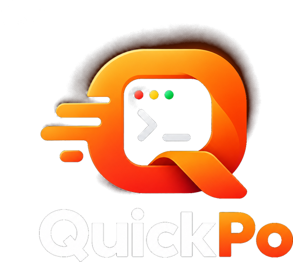

Welcome to QuickPo
Add a project, pick it on the left and press play. Its console lives here.
Launch profile
>_
Not running. Press Launch to start this project.

Add a project, pick it on the left and press play. Its console lives here.
Not running. Press Launch to start this project.